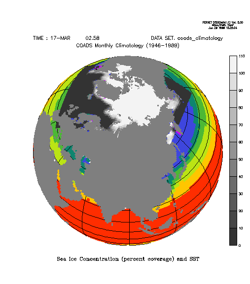

FAQ
Curvilinear Data in Map Projections
Curvilinear Data in Map Projections
Question:
How can I put my curvilinear coordinate data in a map projection?
Example:

Explanation:
You can plot curvilinear grid data on any map projection you wish but you will have to do a little extra work.
The map projection scripts assume that the I,J indices from a dataset are associated with longitude and latitude respectively. This assumption allows the scripts to define the following variables which are used by all the map projections:
let/quiet Pi = 3.14159265 let/quiet deg2rad = Pi / 180.0 let/quiet mp_x = x let/quiet mp_y = y let/quiet mp_lambda = mp_x * deg2rad let/quiet mp_phi = mp_y * deg2rad
When you have curvilinear data this assumption no longer holds and you must alter the definitions of mp_lambda and mp_phi to use longitude and latitude matrices which describe the locations of your data. In the script below, this is accomplished with:
let mp_lambda = my_lon[d=arctic.lon] * deg2rad let mp_phi = my_lat[d=arctic.lat] * deg2rad
Solution:
The above graphic was created by plotting SST from COADS climatology as a base plot andoverlaying sea ice concentration data from the John Walsh sea ice concentration dataset from the National Snow and Ice Data Center.
The journal file to create this plot is:
! Set the region and define the map projection. ! Plot the underlay. ! Add a graticule. ! set win/size=.3/asp=1:ax set region/x=270:630/y=-90:90 go mp_orthographic 90 60 use coads_climatology set grid sst shade/noaxis/nokey/title="Sea Ice Concentration (percent coverage) and SST" sst[t="15-mar"]*mp_mask, x_page, y_page go mp_graticule ! Read in the data defined on the curvilinear axes. ! define axis/x=1:80:1 iindex define axis/y=1:58:1 jindex define grid/x=iindex/y=jindex coord_grid file/var=my_lon/columns=80/grid=coord_grid arctic.lon file/var=my_lat/columns=80/grid=coord_grid arctic.lat file/var=ice/columns=80/grid=coord_grid aricecon.dat set variable/bad=-1 ice ! Redefine the mp_ ! let mp_lambda = my_lon[d=arctic.lon] * deg2rad let mp_phi = my_lat[d=arctic.lat] * deg2rad ! We need to cancel the region because the i,j indices ! on the curvilinear grid have do not have the same meaning ! as the i,j indices from the COADS dataset. ! set grid ice can region shade/over/key/nolabel/noaxis/pal=grayscale ice*10, x_page, y_page ! Restore the mp_ ! let mp_lambda = mp_x * deg2rad let mp_phi = mp_y * deg2rad set region/y=-90:90 go mp_fland 60